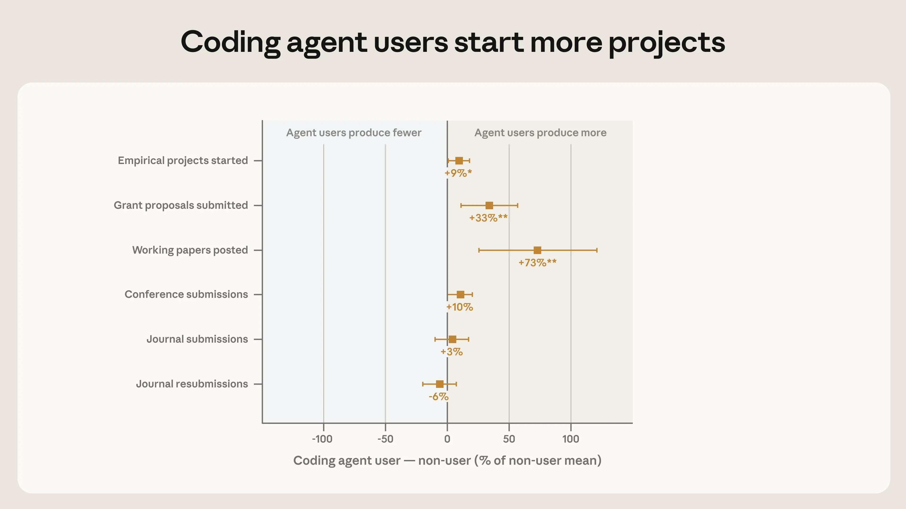
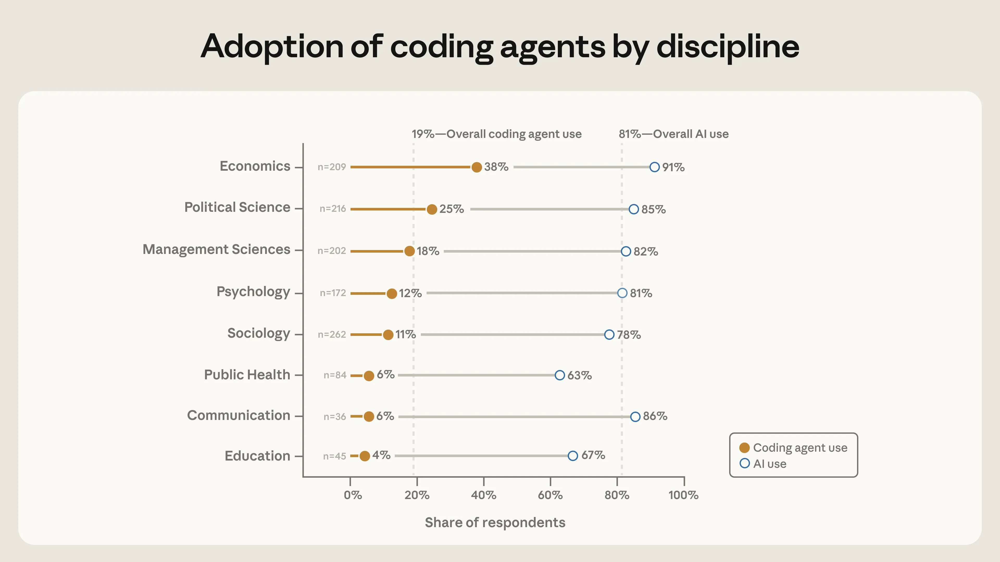
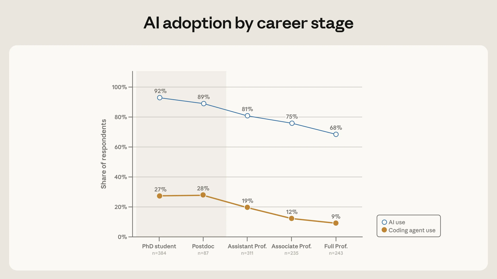
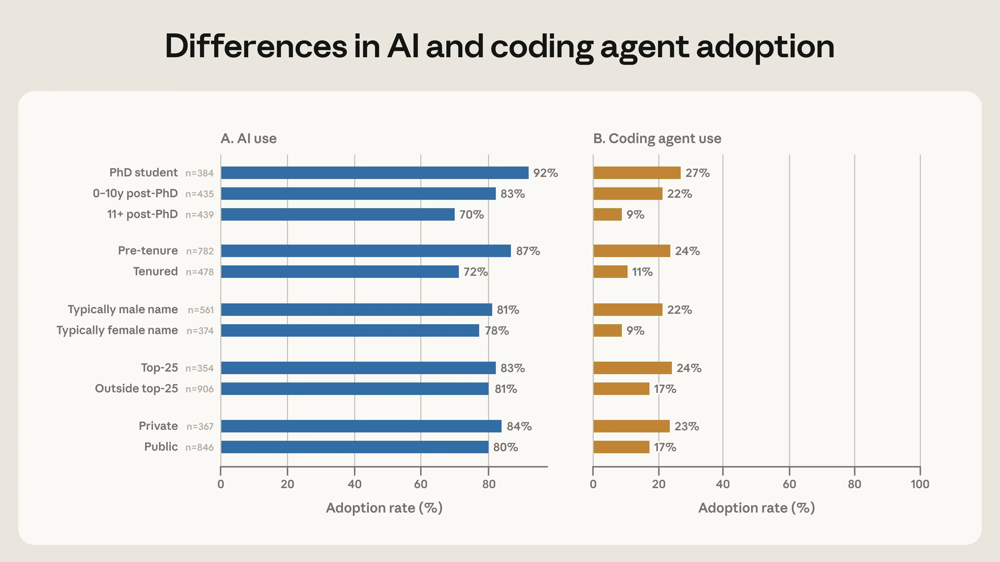
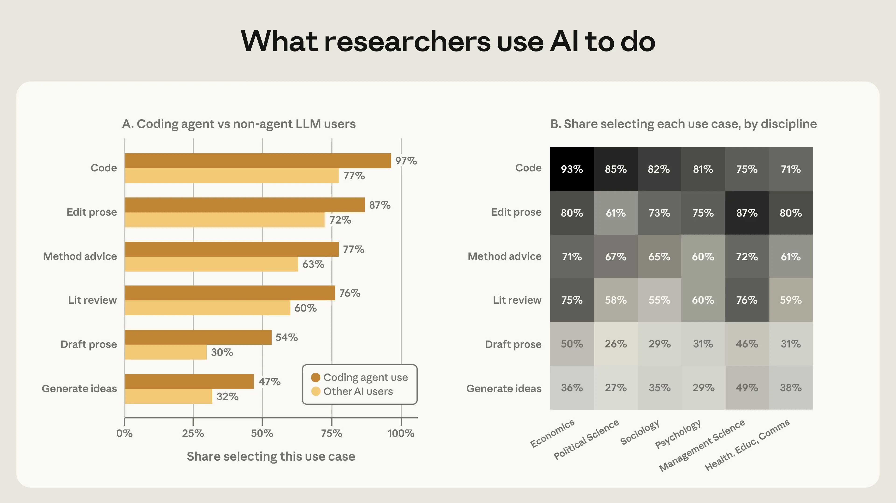

A survey of 1,260 quantitative social scientists in early 2026 reveals that while 81% have used AI chatbots for research, only 20% have adopted coding agents like Claude Code. Adoption is highly uneven: economists lead at 39%, while public health and education lag in single digits. Early-career researchers, those with typically male names, and those at top universities are significantly more likely to use coding agents. Users produce more working papers and grant proposals, though causality is unclear. Researchers are optimistic about AI writing publishable papers but wary of broader disciplinary impacts. The study highlights emerging disparities in access to autonomous research tools.
一项2026年初对1,260名定量社会科学家的调查显示，81%的受访者曾使用AI聊天机器人辅助研究，但仅20%采用了Claude Code等coding agent。采用率极不均衡：经济学家达39%，而公共卫生和教育领域仅个位数。早期职业研究者、男性名字持有者及顶尖大学研究者使用coding agent的比例显著更高。用户产出更多工作论文和基金申请，但因果关系尚不明确。研究者对AI撰写可发表论文持乐观态度，但对学科整体影响存有担忧。该研究揭示了自主研究工具获取中的新兴不平等。




